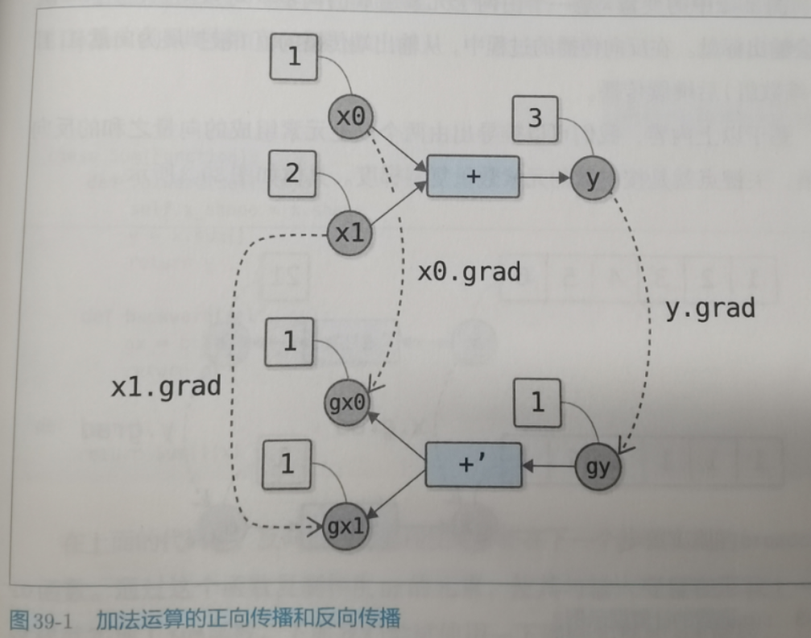
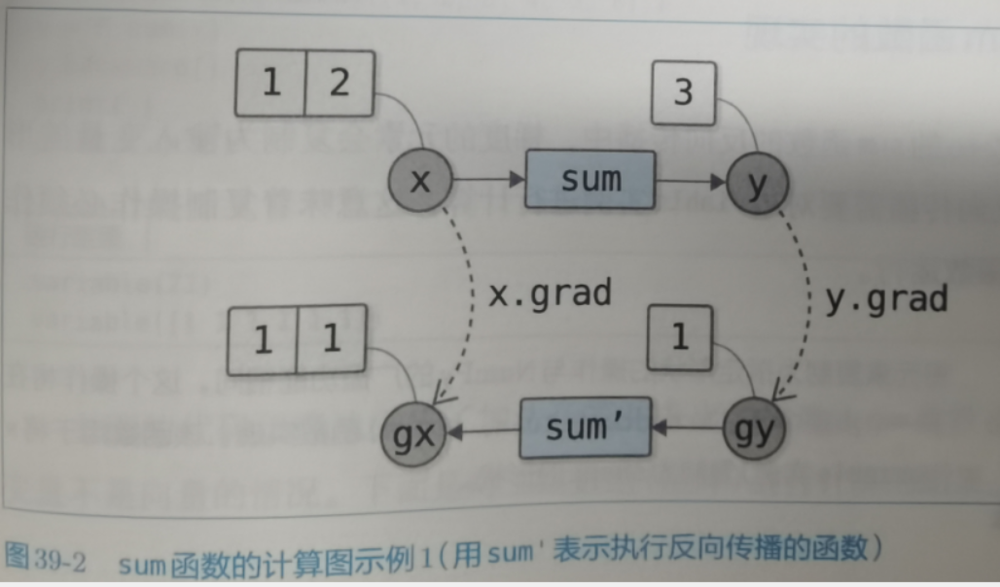
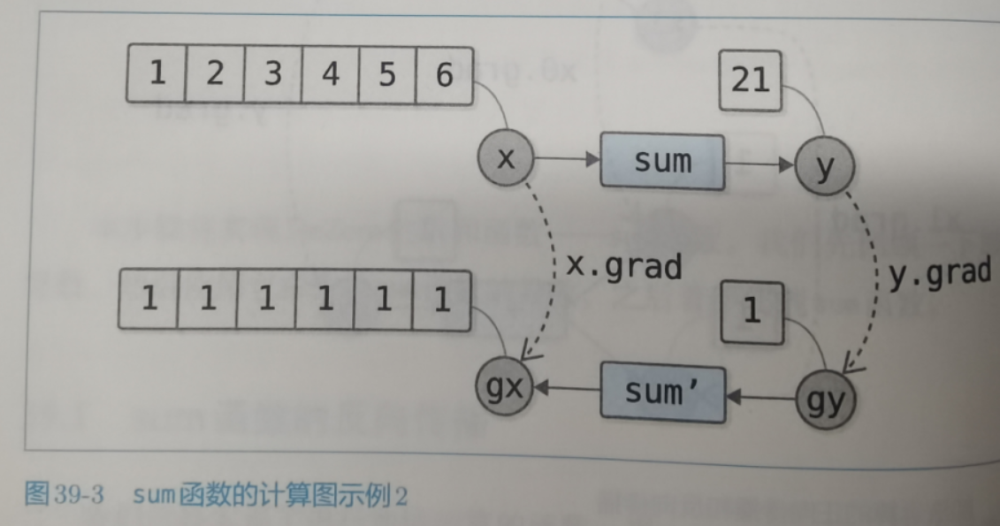
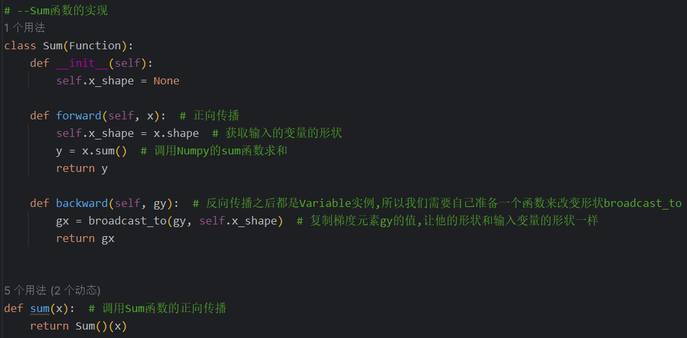
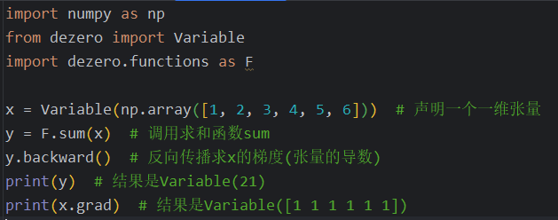
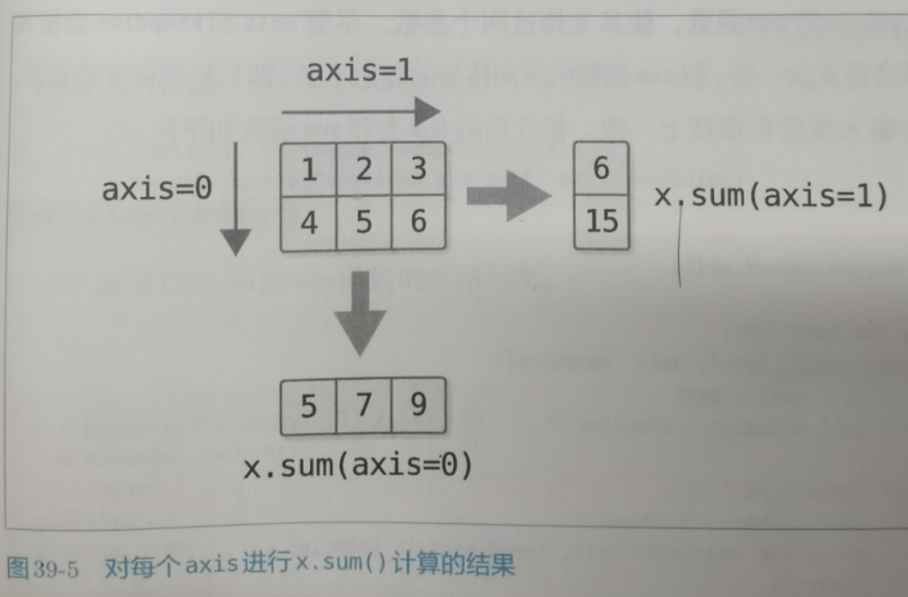
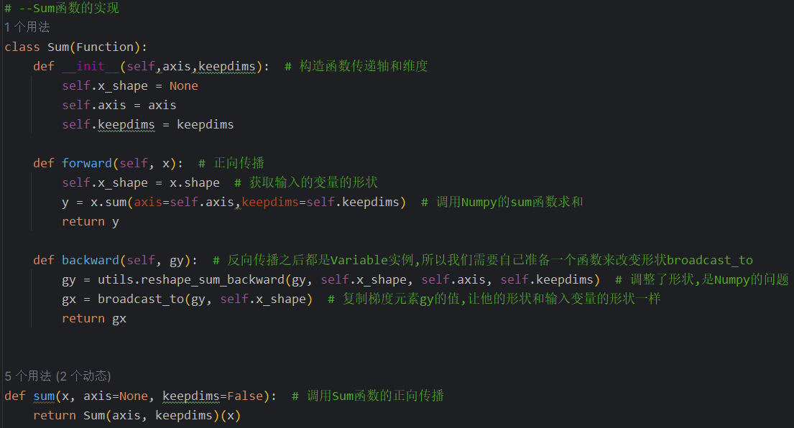
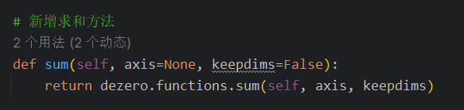
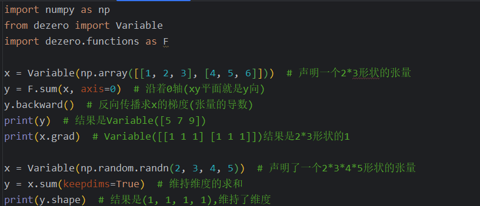

39.求和的函数
39.1 sum函数的反向传播
针对普通的加法y = x0+x1
一个例子:x0=1,x1=2,y=1+2=3
那么3就是求出来的函数值,y对y本身的导数是1,反向传播乘以两个输入的偏导数,分别也是1,所以结果就是gx0=dx0/dy * dy/dy = 1 * 1 = 1,gx1也是1

现在考虑张量的情况,x两个值1和2,经过sum函数累加在一起得到了y值3,y对自身的导数依然是1,y对x的导数就分别对x的每个元素进行求导,gx = dx/dy * dy/dy = 1 * 1 = 1,所以结果就是和x张量一样形状的梯度值1

扩展一下,两个以上元素组成的向量之和的反向传播应该也是返回向量形状的梯度1

39.2 sum函数的实现
代码:调用了我们后面准备的broadcast_to实现复制梯度到指定形状功能


39.3 axia和keepdims
Numpy的sum函数功能更加强大,可以通过axis参数指定沿着某个轴向进行求和.还有keepdims属性可以保持轴的数量(维度的数量),以此为目标,我们修改sum函数

reshape_sum_backward这个函数我们也还没有自己实现,是先复制了代码,

在Variable当中声明类方法,这样就可以在Variable调用了

调用结果
